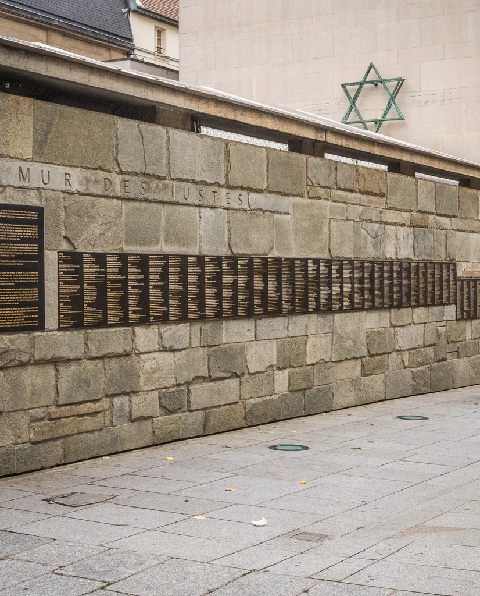

Pourquoi ce site ?
Notre site a des objectifs multiples :
- Faire mieux connaître les Justes, dont la renommée ne nous semble pas suffisante ;
- Contribuer à mettre en valeur l'histoire de Saint-Maur-des-Fossés, où se trouve notre lycée ;
- Permettre aux futures équipes de l'atelier européen de poursuivre notre travail ;
- Nous instruire, et instruire quiconque nous lira.
